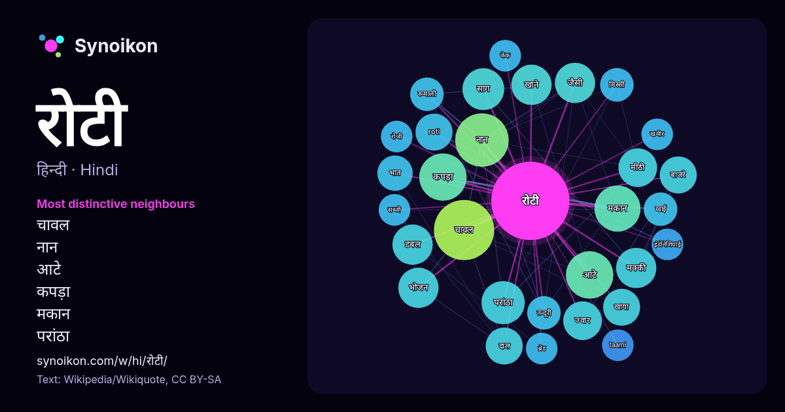

हिन्दी · आज के शब्दों की सूची
रोटी
“bread” · विकिपीडिया, Wikiquote के 698 प्रयोगों में इसके आसपास मिले शब्द।

सबसे विशिष्ट पड़ोसी
- चावल 26×
- नान 23×
- आटे 18×
- कपड़ा 18×
- मकान 17×
- परांठा 16×
- साग 15×
- मक्की 14×
- डबल 13×
- मीठी 13×
- ज्वार 13×
- roti 12×
- बाजरे 12×
- दाल 11×
- खाने 11×
- खाया 11×
- भात 11×
- मिस्सी 9.9×
- तन्दूरी 9.9×
- रूमाली 9.9×
× = सामान्य विकिपीडिया टेक्स्ट की तुलना में कितने गुना अधिक।
सबसे अधिक आने वाले पड़ोसी
- प्रकार 40
- चावल 29
- नान 23
- भारतीय 21
- आटे 18
- कपड़ा 18
- भारत 18
- मकान 17
- परांठा 15
- साग 14
- खाने 13
- जैसी 13
- डबल 13
- पानी 13
- भोजन 13
- मक्की 13
- ज्वार 12
- बनाने 12
- मीठी 12
- वाली 12
संदर्भ में
- रुचि रोटी पोई।। प्रेम सहित परुसन लगी, हलधर की माता। – भक्त सूरदास जी नान परांठा मिस्सी रोटी बयारु रोटी लच्छा परांठा मीठी रोटी मण्डे (रूमाल जैसी रोटी) तन्दूरी Wikipedia snippets · रोटी
- मिस्सी रोटी एक राजस्थानी व्यंजन है। यह एक प्रकार की रोटी होती है। 'मिस्सी रोटी' शब्द दो शब्दों से बना है : 'मिस्सी ' और 'रोटी । मिस्सी शब्द सं … Wikipedia snippets · मिस्सी रोटी
- छिलका रोटी भारत के झारखण्ड राज्य की एक पारंपरिक रोटी है। यह चावल के आटे से तैयार किया जाता है। इसे चटनी, सब्जियों और मांस के साथ परोसा जाता है। इसे चिल्का Wikipedia snippets · चिल्का रोटी
- रोटी टिशू (मलय: Roti Tisu) या टिशू प्राता एक मीठी प्रकार की रोटी है, जिसे मलेशिया और सिंगापुर के मामाक स्टाल में बेचा जाता है। इसे रोटी हेलिकॉप्टर के Wikipedia snippets · रोटी टिशू
- रोटी गांबांग (इंडोनेशियाई: Roti Gambang) या रोटी गांजल रेल एक इंडोनेशियाई चौकोर भूरी रोटी है जिस पर तिल डाला जाता है। यह जकार्ता और समारांग की एक पारंपरिक Wikipedia snippets · रोटी गांबांग
- रुमाली रोटी भारतीय उपमहाद्वीप के उत्तरी भागों, विशेषकर उत्तर भारत एवं पाकिस्तान में प्रचलित एक बहुत पतली मैदा से बनी रोटी होती है। इसे प्रायः कबाब के संग Wikipedia snippets · रूमाली रोटी
- रोटी बाकार (इंडोनेशियाई: Roti Bakar) या रोटी कावीन (इंडोनेशियाई: Roti Kawin) दक्षिण पूर्व एशिया में एक प्रकार का टोस्ट है। इसपर मक्खन डालकर सेंकने के बाद Wikipedia snippets · रोटी बाकार
- रोटी 1974 में बनी हिन्दी भाषा की फिल्म है। इसका निर्माण रजनी देसाई ने और मनमोहन देसाई द्वारा निर्देशन किया गया। इसमें राजेश खन्ना और मुमताज़ ने अभिनय किया Wikipedia snippets · रोटी (1974 फ़िल्म)
और शब्द
- इतिहास
- ईश्वर
- कार्य
- कुत्ता
- गर्मी
- गाना
- घंटी
- घड़ी
- घोड़ा
- चाय
- चित्रकला
- छाया
- जंगल
- जलवायु
- जीवन
- तूफ़ान
- दर्पण
- द्वीप
- नक्षत्र
- नमक
- परिवार
- पहाड़
- पानी
- पैसा
- प्रकृति
- बगीचा
- बिल्ली
- भाषा
- भोजन
- माता
- मानचित्र
- मृत्यु
- मौन
- रेगिस्तान
- रेलगाड़ी
- वर्षा
- विज्ञान
- शक्ति
- शरद
- शहद
- शहर
- सड़क
- सत्य
- समय
- सर्दी
- सेतु
- स्वर्ण
- स्वास्थ्य
- हृदय
2026-10-09 को डिफ़ॉल्ट सेटिंग्स (±5 शब्द, मध्यम कॉर्पस) के साथ पहले से गणना की गई। इंटरैक्टिव मानचित्र इसे लाइव डेटा से ताज़ा कर सकता है।
मशीन-अनूदित इंटरफ़ेस; सुधारों का स्वागत है।